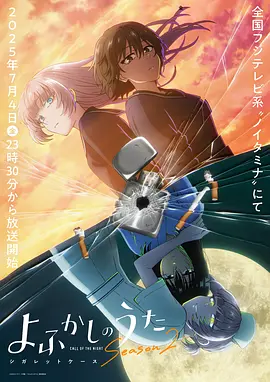

8.8
彻夜之歌 第二季
Call of the Night Season 2
2025
日本
评分 8.8
导演:
板村智幸
演员:
佐藤元 / 雨宫天 / 花守由美里 / 户松遥 / 喜多村英梨
类型:
剧情,奇幻,爱情
剧情简介
夜晚重新展开帷幕，城市的灯火在深处闪烁，仿佛在召唤那些仍未找到归宿的人。跨过第一季的迷惘后，夜守光终于下定了决心：这一次，他要真正喜欢上七草荠。与此同时，荠也悄然决定，不论方式多么笨拙，都要让光对自己产生那份足以改变命运的情感。两人谁都不懂恋爱，却在夜色的推动下不断靠近，彼此的心意像是在摸索中悄悄成形。然而，夜晚不只有浪漫，也潜伏着危险。侦探莺馅子的身影逐步逼近，她带着想要猎杀吸血鬼的决意，却也隐藏着自己的复杂过去。光在跟踪、对话、交锋中逐渐察觉，她与荠之间似乎存在着某段被封存的秘密，而那段往事正在重新掀开缝隙。荠看似无忧无虑，却完全不记得自己作为人类时的任何痕迹，这让她在人前显得率性，却在无人处显露出一丝连自己都无法解释的空白。漫长的深夜里，光与荠继续他们独特的“熬夜冒险”。偷溜进没有人的天台、在荒凉的泳池边聊天、在街灯摇晃的巷口彼此取暖……这些看似轻松的小片刻，让光愈发感到自己正在被夜晚塑造，而荠也在和光的互动中，一点点展露她未曾察觉的情感缝隙。馅子的出现，使他们之间的关系多了紧张与未知，那些本以为不会触碰到的秘密，终究在日复一夜的相处中逐渐逼近真相。新的夜晚已经开始。光、荠、馅子三人的关系在暗影中交错，每个人都被夜色牵引向命运更深处。随着情感不断发酵，他们必须面对的，不仅是吸血鬼与人类的界限，更是内心深处真正的渴望与选择。